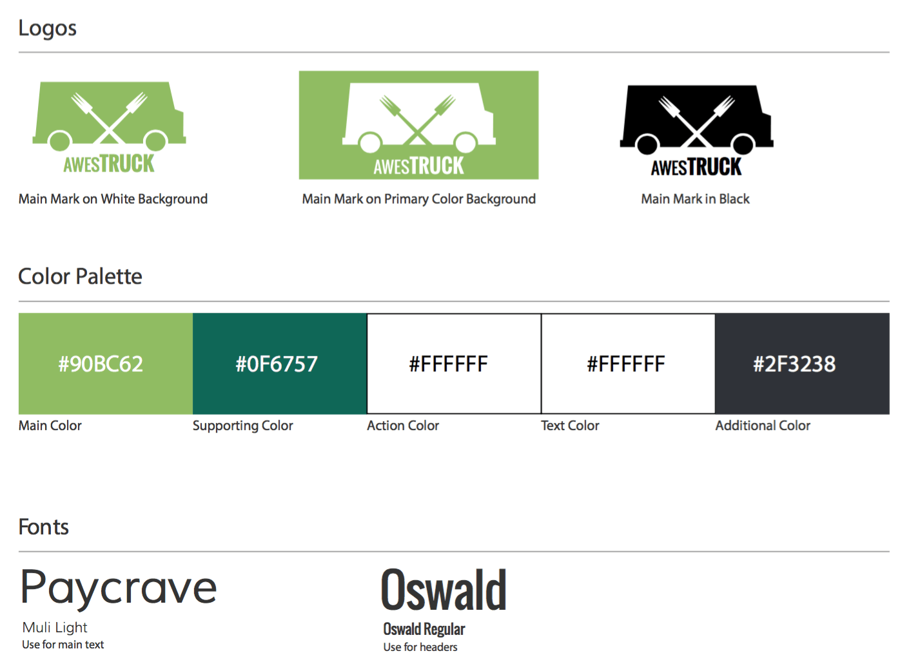
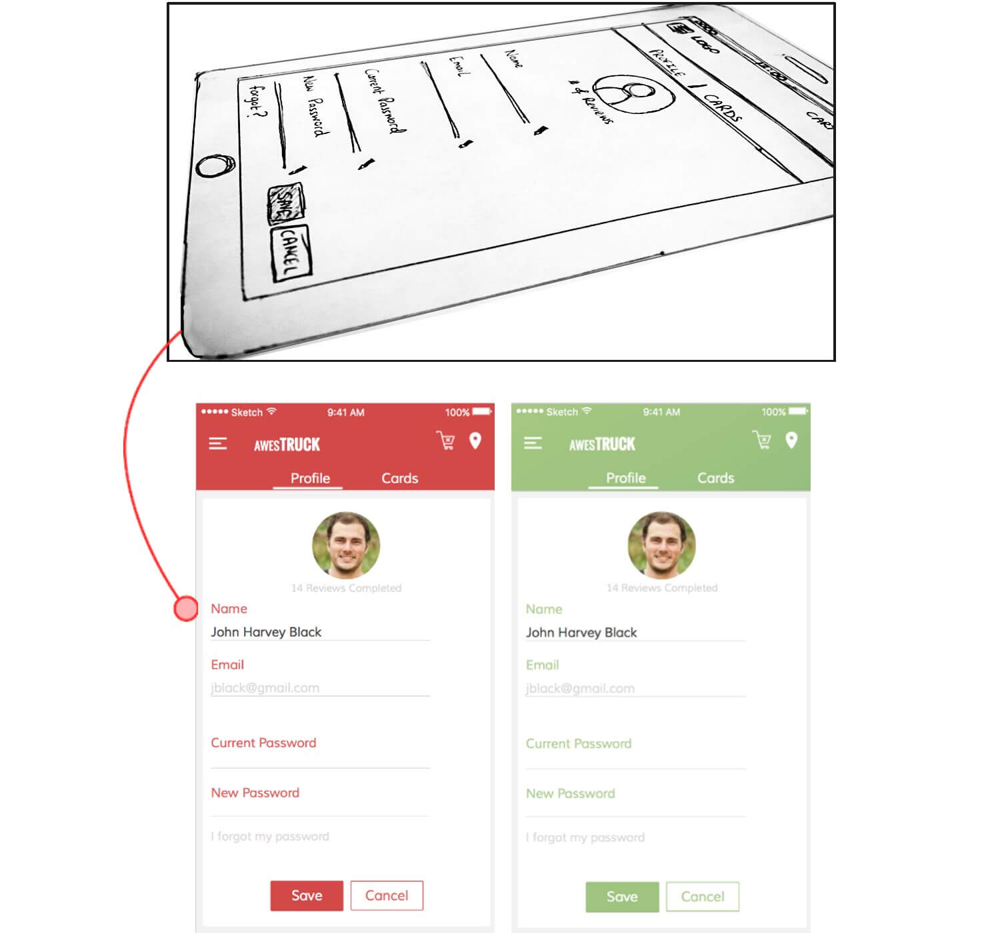
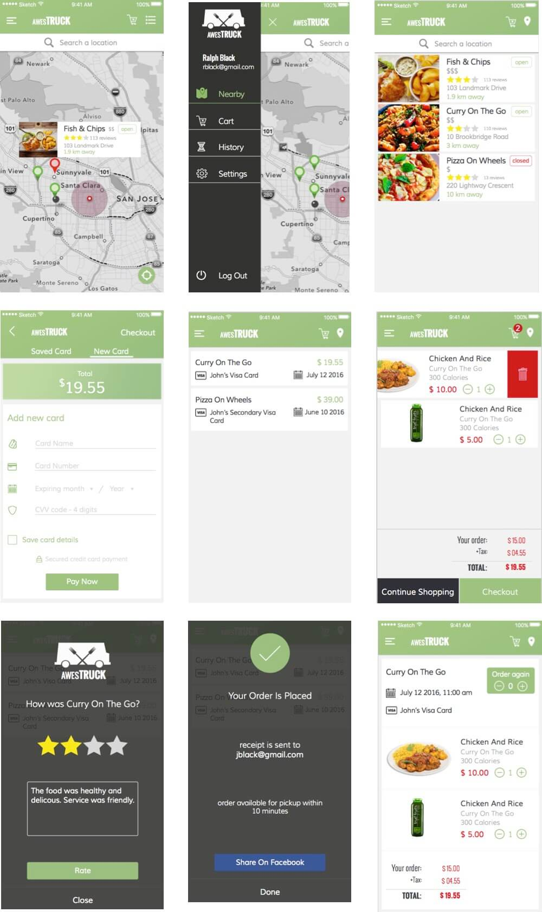
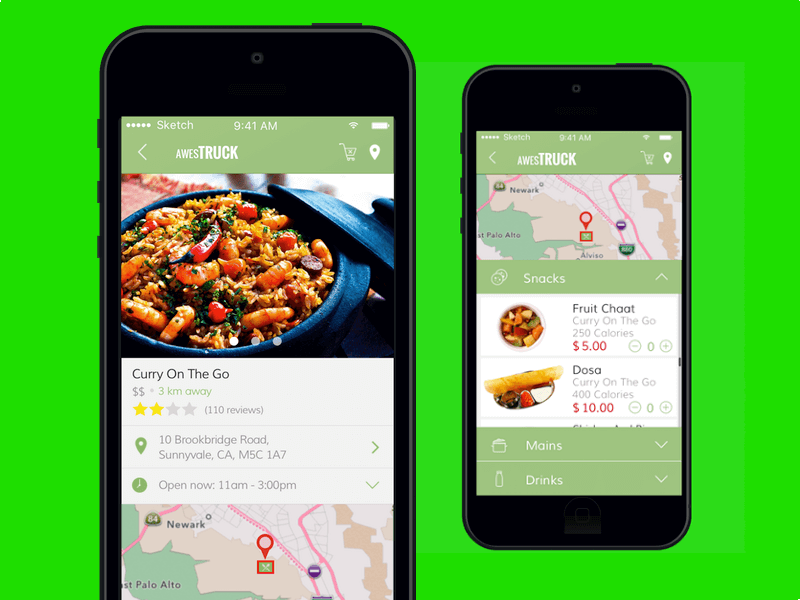
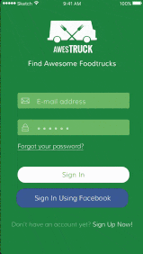

The client wanted a design of a mobile application for iOS that allows users to find food trucks near them, view a menu and select items for purchase and checkout. A well-designed solution for mobile checkout hasn't been created yet for the food truck industry, making this an exciting and novel project.
Competitive Analysis was performed to see how other company's are tackling mobile checkout. Some competitors examined were Square Cash and PayPal mobile.
Since this is an iPhone application all the design work conformed with the iOS Human Interface Guidelines.
User stories were used to define requirements and ensured that the user was always at the center of design and development process:
The following design guideline was created:

Some of the designs made are displayed below, initially the low fidelity prototypes were sketched on paper.
Below is a sketch of the profile page mobile screen and the corresponding design of the profile page mobile screen:

Other designs:


Certain parts of the finished design were animated using Principle. These animations provided more details about user interaction.

Marvel prototypes were created throughout the design phase to test the UI and UX based on feedback from potential users. User feedback included suggestions such as: buttons needed more padding and that a "changes are being saved" state was needed while any profile changes were being updated.
The final product given to the client was complete wireframes and designs of an iOS mobile application that allows users to find food trucks near them, view a menu, select items for purchase, checkout and review previous purchases.